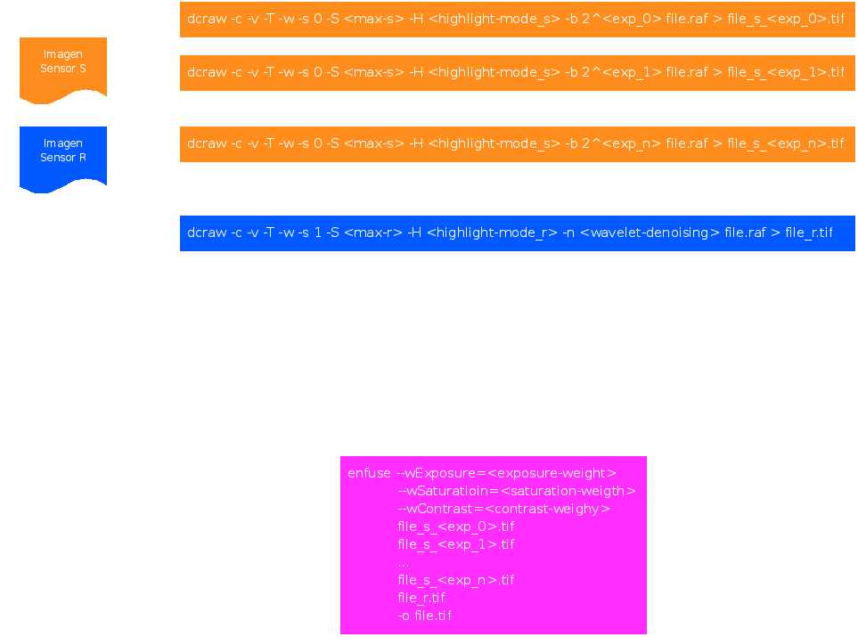

Optimizar el revelado para la Fuji S5 Pro
Ufraw
Desde hace ya algunos años soy usuario de GNU/Linux. Cuando me adentré en esto de la fotografía me alegré muchísimo de descubrí la existencia de un programa de revelado llamado Ufraw, con él comencé a revelar mis primeros ficheros RAW. Se trata de un programa sencillo y muy práctico, ideal para comenzar el aprendizaje de revelar RAW.
Dcraw
Pasado algún tiempo encontré otro programa de revelado llamado Dcraw, a diferencia del anterior, Dcraw no es un programa gráfico, es un programa de consola. Dcraw nos brinda un conjunto posibilidades inexistentes en otros reveladores RAW, esto hace de él una herramienta increíblemente pedagógica para todas aquellas personas que quieran adentrarse en esto del revelado RAW. Explicar el funcionamiento de Dcraw, no entra dentro del contenido de este artículo, sin embargo quiero recomendar un par de artículos creados por Guillermo Luijk, que creo os serán sumo interés:
http://www.guillermoluijk.com/tutorial/dcraw/
http://www.guillermoluijk.com/article/superccd
Para entender lo fantástico que es Dcraw no solo hay que mirar sus opciones hay que comprender lo difícil que es crear un programa así, en las siguientes líneas trataré de explicar esto. Como sabéis, cada fabricante de cámaras digitales utiliza un formato distinto para sus ficheros RAW, es más, en muchos casos un mismo fabricante utiliza diferentes formatos para las distintas cámaras que fabrica, esto hace que si queremos crear un revelador RAW deberemos conocer dichos formatos. ¿Os imagináis lo difícil que sería construir un programa de revelado sin dichas especificaciones?, pues bien ese programa es Dcraw. Escrito por Dave Coffin Dcraw permite revelar los RAW de la mayoría de cámaras del mercado, se puede decir que sin él sería imposible revelar ficheros RAW en GNU/Linux, y es por ello que todos los fotógrafos que usamos software libre tenemos mucho que agradecerle. Todos los reveladores gráficos libres (y algunos privativos) hacen uso de Dcraw en alguna manera, un ejemplo es Ufraw, éste usa internamente Dcraw para revelar los ficheros RAW. Sin embargo a pesar de ser un programa magnífico Dcraw tiene un gran problema para los usuarios de una cámara con Super CCD. Dcraw nos permite revelar por separado las dos imágenes (S y R) que están encapsuladas en nuestros RAW, sin embargo, no nos permitirá fusionar ambas imágenes en una sola toma. Esto hace que el punto fuerte de nuestras máquinas se pierda de forma instantánea en el software libre, ya que si Dcraw no realiza el revelado usando las dos tomas del RAW, ningún programa que usase Dcraw de forma interna podría tampoco hacerlo. De hecho así es o mejor dicho era.
Enfuse
Pasados algunos meses en los cuales estuve intentando sopesar el problema de varias formas, llegué a una solución bastante sencilla y que dio buenos resultados. Se trata de un script que hace uso de Enfuse y Dcraw para revelar los RAW usando la información de ambos captores. Sin embargo aunque los resultados obtenidos con dicho script son muchas veces satisfactorios, es cierto que algunas veces necesitamos más control a la hora de realizar un revelado. En estos casos se hace imprescindible una aplicación gráfica (revelador RAW) que nos permita controlar los cambios que sufre la imagen al tiempo que modificamos algún parámetro. No obstante creo que dicho script, creado en Bash no debería quedarse solo en mi ordenador, es por ellos que lo cuelgo aquí con el fin de que más personas puedan sacarle partido:
Aquí os dejo un esquema de como trabaja este script, si tenéis alguna duda de como funciona no dudéis en preguntar en nuestro foro. No obstante quiero aclarar que en el futuro tengo previsto realizar un artículo sobre el funcionamiento de dicho script.

Rawtherapee
Después de este periodo de pruebas e intentos por optimizar al máximo el revelado de los RAW de mi máquina, di con un programa llamado Rawtherapee. Este programa al igual que los demás hace uso de Dcraw, sin embargo hay algo que lo diferencia de los demás. El resto de reveladores gráficos (software libre), en mayor o menor proporción son un mera interfaz gráfica de Dcraw, sin embargo Rawtherapee es mucho más que esto. Rawtherapee solo utiliza Dcraw para conocer el formato que tiene los RAW, a partir de ahí, todo lo demás es responsabilidad suya. Cuando usamos Ufraw y hemos elegido los parámetros de revelado, Ufraw llamará a Dcraw con los argumentos que hemos elegido en la interfaz gráfica, sin embargo Rawtherapee trabaja totalmente diferente, este solo usa Dcraw para abrir el RAW, una vez hecho esto, todos los procesos realizados sobre el RAW son responsabilidad de Rawtherapee y no de Dcraw (incluso el proceso de demosaicing).
Después de estudiar el código de Rawtherapee me di cuenta de que el proyecto estaba bien estructurado y sería "fácil" modificarlo con el fin de optimizar el revelado de los RAF de mi S5, así que me puse manos a la obra y después de varios intentos creó que tengo una versión definitiva que permitirá explotar al máximo la capacidad de nuestras máquinas. Para realizar dicha tarea solo tuve que modificar el fichero dcraw.cc, después de dicha modificación generé un parche que permitirá a cualquier persona adaptar Rawtherapee a los RAW de sus S5 Pro, dicho parche lo adjunto a continuación:
Soy totalmente consciente de que muchas personas no sabrán instalar dicho parche y compilar a posteriori el programa. Yo podría publicar aquí una versión de Rawtherapee que incluyera dicha modificación, sin embargo por respeto al desarrollador de este proyecto, quiero esperar un tiempo prudencial, ya que le he enviado esta mejora con el fin de que la incluyan en el proyecto oficial. Si dicha modificación no fuera incluida colgaría aquí la versión modificada de Rawtherapee tanto para Linux como para Windows.
Para finalizar quiero mostraros los resultados que he obtenido con la modificación de Rawtherapee. Aquí os dejo dos enlaces, el primero es el fichero RAW que he revelado y el segundo el resultado. Tengo que aclarar que la imagen que aparece en el segundo enlace fruto del revelado con Rawtherapee modificado, no ha sufrido ningún tipo de retoque, es puramente el resultado del revelador.
{kind=link}